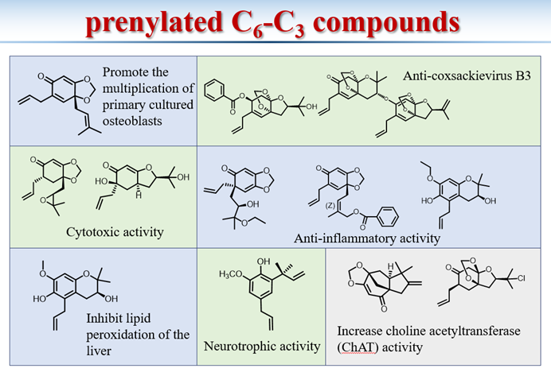

Project 1
Chemical Composition and Biological Activity Research of the Roots and Stem Bark of Illicium brevistylum A.C.Smith¶
Sept. 2021 – June 2024
Illicium brevistylum A.C.Smith is a plant belonging to the Illicium genus, native to China. This plant is characterized by its seco-prezizaane sesquiterpenes and prenylated C6-C3 compounds. Most plants within this genus are known to be toxic, with many compounds isolated from them exhibiting either neurotrophic or neurotoxic properties.
In this project, we delved into the chemical constituents and biological activities found in the roots and stem bark of Illicium brevistylum A.C.Smith. Our approach involved employing TLC, LC-HRMS, and LC-UV guided by the distinctive absorption patterns of seco-prezizaane sesquiterpenes and prenylated C6-C3 compounds. We utilized a comprehensive array of separation methods, such as silica gel column chromatography, high-performance liquid chromatography, polyamide, macroporous resin, gel, and ODS, to successfully isolate the seco-prezizaane sesquiterpenes and prenylated C6-C3 compounds from Illicium brevistylum A.C.Smith. The structural characterization of these compounds was accomplished through a combination of UV, IR, MS, NMR, ECD, X-ray diffraction, and other spectral analyses. Subsequently, we screened the isolated compounds for pharmacological activities, aiming to identify active substances suitable for structural modification or with substantial intrinsic activities.
Currently, we have isolated a total of 38 compounds from the roots of Illicium brevistylum A.C.Smith, all falling under the category of prenylated C6-C3 compounds, with 5 of them being novel compounds. Our ongoing efforts will continue to focus on exploring the chemical constituents of the stem bark. Through the meticulous study of both the roots and stem bark of Illicium brevistylum A.C.Smith, we have established a foundation for the systematic elucidation of its chemical constituents.
